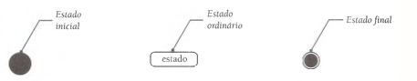
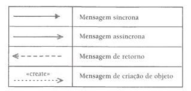

Analise e Projeto Orientados a Objeto
O objetivo dessa disciplina é prover ao aluno conhecimento e ferramenta para a Análise de Projetos Orientados a Objeto.
Processo de desenvolvimento de software
Como tudo na vida, desenvolver software é um processo que possui etapas. Sendo usadas ou não, é necessário organizar os processos para softwares possam ser entregues com qualidade. A seguir, os processos para o desenvolvimento de software:
- Análise: consiste em levantar os requisitos do sistema proposto com o objetivo de entender o seu funcionamento.
- Projeto: considera os aspectos lógicos e independentes de implementação. Nesta fase, determina-se como o sistema funcionará. Como artefatos, são produzidos diagramas de casos de uso, diagramas de classes entre outros.
- Implementação: é a fase de codificação utilizando linguagem de programação.
- Testes: nesta etapa são realizados testes para verificação / detecção de erros.
- Implantação: o sistema é impacotado, distribuído e instalado no ambiente do usuário.
Requisitos
É uma condição ou uma necessidade que o sistema se propõe a realizar. Podem ser de dois tipos:
Funcionais
Definem as funcionalidades a serem desenvolvidas do sistema. Exemplo:
O sistema deve permitir lançar nota pelo professor.
Não-funcionais
Declaram as características de qualidade que o sistema deve possuir e que estão relacionadas às suas funcionalidades. Exemplo:
Confiabilidade, desempenho, segurança...
Os diagramas UML
A UML, sigla para Unified Modeling Language ou Linguagem de Modelagem Unificada, é um conjunto de diagramas que tem por objetivo documentar de forma visual um software. Ela é usada na etapa de analise e projeto no desenvolvimento de software.
Foi criada na década de 1990 por James Rumbaugh, Grady Booch e Ivar Jacobson, com o intuito de unir diferentes modelos de diagramação orientados a objetos na época.
Atualmente a UML está na sua segunda versão, com 13 diagramas dividos em 3 categorias:
Diagramas de estrutura: inclui os diagramas de Classes, Objetos, Componentes, de Deploy, Pacotes e de Composição de estrutura.
Diagramas de comportamento: inclui os diagramas de Casos de Uso, Atividade e Máquina de estados.
Diagramas de interação: inclui os diagramas de Interação, Sequencia, Comunição e Tempo.
Aqui será abordado os Diagramas de Casos de Uso, Classes, Sequencia e de Máquinas de Estado.
Diagrama de Casos de Uso
Um caso de uso representa quem faz o que (interage) com o sistema, sem considerar o comportamento interno do sistema
Em suma, o diagrama de Casos de Uso ilustra os requisitos funcionais do sistema, sem levar em conta como isso será implementado no mesmo.
Notação

- Elipse: representa o caso de uso, ou seja, as funções/funcionalidades do sistema.
- Fronteira: retangulo que demarca o espaço do sistema em relação ao espaço não participante do sistema.
- Ator: pesssoa/outro sistema que interage com o sistema.
- Setas/Linhas: representam os relacionamentos entre atores/funcionalidades
- Ator primário: é o que dispara o caso de uso. Que interaje diretamente com o caso de uso.
- Ator secundário: é que auxilia o ator primário na execução do caso de uso. Não interaje diretamente com o caso de uso.
Estereótipos que ocorrem entre casos de uso:
Include
Representa um relacionamento obrigatório. Exemplo: ao executar o caso de uso efetuar venda, obrigatoriamente será executado o caso de uso emitir nota fiscal.
Extend
Representa um relacionamento não obrigatório. Exemplo: para ser executado o caso de uso efetuar venda, não é obrigatório executar o caso de uso autorizar venda.
Exemplo:

Estereotipo que ocorre tanto entre casos de uso quanto entre atores
Generalização
Este relacionamento permite que um caso de uso (ator) herde caracteristicas de outro caso de uso (ator). O caso de uso (ator) herdeiro é responsavel por implementar por si mesmo o comportamento herdado. O caso de uso (ator) herdado é conhecido como caso de uso (ator) base.

Diagrama de Classes
Um Diagrama de Classes é um diagrama do tipo estático que define quais as entidades em seus sistema bem como o relacionamento entre elas.
O diagrama de classes fornece as seguintes visualizações:
- Conceitual, pois fornece os principais conceitos do sistema, bem como os domínios do mesmo.
- Especificação, pois oferece a possibilidade de compreender os métodos do sistema, sem fornecer como os mesmos irão ser implementados.
- Implementação, pois fornece os principais detalhes de implementação do sistema, como visibilidade e tipos de atributos das classes.
Principais conceitos:

Classes
São as abstrações das entidades. Podemos fazer paralelo com as entidades de um Modelo Entidade-Relacionamento(EE). Toda classe contem atributos, que são as suas caracteristicas e pode conter métodos / ações, que define os comportamentos da mesma.
Relacionamentos / associações
São as associações entre as classes. Novamente, é possível fazer paralelo com o Modelo EE. Cada classe, quando em um relacionamento, desempenha um papel. Também ocorre no relacionamento o que se chama de multiplicidade, que é representar quantas instancias de uma classe podem se relacionamento com quantas instancias de uma outra classe.

Tipos de relacionamento:
Generalização
É o ato de generalizar uma classe em outra classe. O processo oposto é de especialização. Neste relacionamento, há o conceito de herança, em que a classe que herda (especializa) outra, herda suas caracteristicas. Há alguns nomes diferentes para o que ocorre aqui, mas em suma são a mesma coisa. Exemplo: subclasse (a que herda) e superclasse (a que faz herdar).
Há o conceito de classe abstrata que surge. A classe abstrata, na UML, é representada como uma classe que contem o nome em itálico.

Classe associativa
É uma classe que nasce de uma associação entre duas ou mais classes. Essa classe surge da necessidade de guardar informações que surgem da associação. Podemos exemplificar com a seguinte situação: temos a classe Pessoa que se relaciona com a classe Empresa. No relacionamento entre os dois surge a classe Emprego, sendo que esta só existe quando ocorre o relacionamento, temos portanto uma classe associativa:

Agregação
É quando ocorre uma associação entre classes, em que uma é parte e outra é o todo. Exemplo: classe JOGADOR que se relaciona com o CLUBE que se relaciona com ASSOCIAÇÃO.

Composição
É quando ocorre uma associação entre classes, em que a classe TODO é responsável pelas suas partes de tal forma que se a classe TODO deixa de existir, as suas partes também.

Associações reflexivas
É quando a classe se associase a ela mesma. Conhecido no Modelo EE como Auto Relacionamento.
Diagrama de estados
É o diagrama que representa as mudanças de estado de um objeto no sistema
Conceitos apresentados no livro Princípios da UML, do Bezerra
Estado
Um estado é uma situação na vida de um objeto durante a qual ele satisfaz alguma condição ou realiza alguma atividade. Um estado tem a ver com o valor de um atributo do objeto, como por exemplo, dizer-se que uma conta bancária está vermelha.
Transições
Os estados estão associados a outros pelas transições. Uma transição é mostrada como uma linha conectando estados, com uma seta apontando para um dos estados. Quando ocorre uma transição entre estados, diz-se que a transição foi disparada.
Evento
Uma transição possui um evento associado. Um evento é algo que acontece em algum ponto no tempo e que pode modificar o estado de um objeto.
Condição de guarda
É uma expressao que retorna um valor lógico. Ela é acionada quando o objeto vai mudar de estado. Se retornar positivo, ocorre a mudança, do contrário, não ocorre.
Ações
Ao passar de um estado para um outro, o objeto pode executar uma ou mais ações.
Estados aninhados
Ocorre quando um estado possui outros estados dentro de si. Também é conhecido como estado composto.
Exemplo básico

Exemplo um pouco mais complexo

Diagrama de sequencia
O objetivo deste diagrama é explicitar a interação entre objetos numa ordem temporal em que elas acontecem.
Elementos:
Linha de vida
Uma linha de vida mostra o tempo a qual o objeto tem sua "vida" no sistema.
Exemplos de linha de vida:

Mensagem
Uma mensagem é quando um objeto envia uma ação a outro. Neste diagrama, uma mensagem é referenciada como uma seta entre uma linha de vida e outra
Exemplos de formatos de mensagens

Exemplo de diagrama de sequencia

É importante entender o fluxo no diagrama acima, num padrão MVC:
O ator que interage dispara o fluxo. Ele interage com o controlador ou a view. Se for a view, está emite uma mensagem para o controlador para que este converse com a classe de negócio, que contém o método necessário a ação.
Exemplo com figuras para o controler e view

Diagrama de pacotes:
É um agrupamento da UML que define os relacionamentos entre grupos de classes do sistema. Eles são importantes para agrupar as classes do sistema.
Exemplo:

Diagrama de componentes:
Exemplifica os componentes do sistema, ele é mais voltado a parte de implementação do sistema
Exemplo:

Referencias:
- Site oficial da UML
- Wikipedia
- Livro Principios da UML do Bezerra